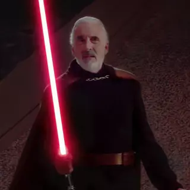

Origine


Le comte Dooku était un Jedi corrompu par le Côté Obscur de la Force qui devint l'apprenti de Dark Sidious. Il tua le Maître Jedi Sifo-Dyas puis créa la Confédération des Systèmes Indépendants, dont il devint le leader. Il prit secrètement la Sœur de la Nuit Asajj Ventress comme apprentie et combattit contre la République, jusqu'à sa mort dix neuf ans avant la bataille de Yavin, après un duel face au jeune Jedi Anakin Skywalker.